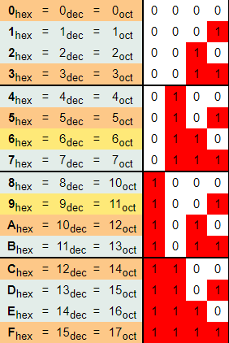
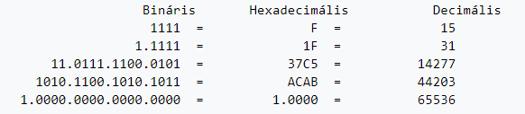
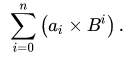
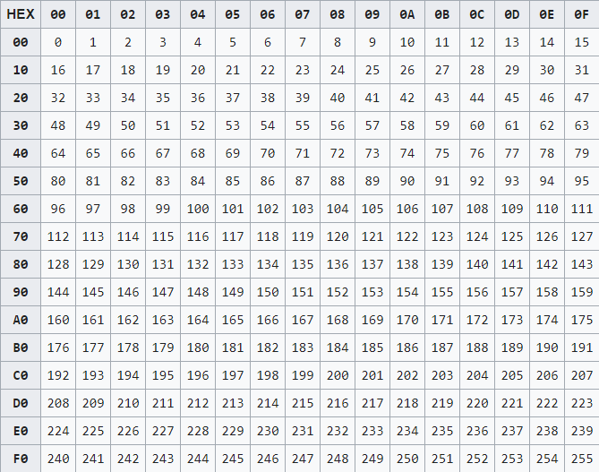

Tizenhatos Számrendszer
A tizenhatos (hexadecimális) számrendszer a 16-os számon alapuló számrendszer, az informatika kulcsfontosságú számrendszere (zsargonban: hexa). A tizenhatos számrendszer a 0, 1, 2, 3, 4, 5, 6, 7, 8, 9 számjegyeken kívül az A, B, C, D, E, F betűket (vagy ezeknek kisbetűs megfelelőjét; mindkettő használat megengedett) használja, ezek segítségével ábrázolja a valós és komplex számokat.
A 0–9 számjegyek használata értelemszerű (azaz: a tízes számrendszernek megfelelő), az A számjegy 10-et, a B számjegy 11-et, a C számjegy 12-t, a D számjegy 13-at, az E számjegy 14-et, míg az F számjegy 15–öt jelöl (ez összesen 16 számjegy, tekintettel arra, hogy a nulla az első).
Az eltérő számrendszer használatára általában a szám után írt alsó indexes H betű utal, például: C9H. A tizenhatos számrendszerben leírt szám számjegyei tulajdonképpen a tizenhatos szám 0-val kezdődő és számjegyenként eggyel növekvő exponensei a szám legkisebb helyiértékű számjegyeitől haladva a legnagyobb helyiértékűekig (azaz jobbról balra). Például 3F8H a tízes számrendszerben 1016 (= 3×16^(2) + 15×16^(1) + 8×16^(0) = 3×256 + 15×16 + 8×1 = 768+ 240 + 8 = 1016). Az eltérő számrendszer használatára utalhat alsó indexben 16-os szám is.
A hexadecimális kifejezés a görög nyelv (hexi) szavából (jelentése: hat) és latin nyelv decem (jelentése: tíz) szavaiból származik.
Mivel az egyes programozási nyelvekben gyakran fordulnak elő hexadecimális számok és mivel a programozási nyelvek sokrétűek és fejlődésük hektikus, ezért a hexadecimális számok felírása is különböző:
az Ada és VHDL programozási nyelvek a számot egy "numerikus idézőjelbe" ("#" karakter) teszik "#" (például "20#5A3#"),
a C programozási nyelv és a rajta alapuló nyelvek (például a Java programozási nyelv) a „0x” prefixet használja (például „0x5A3”). A „0” azt jelenti a fordítóprogram számára, hogy számról van szó, az „x” pedig azt, hogy hexadecimális számról,
a HTML nyelvben szintén az „x” karakter használatos, például a decimális „֣” hexadecimális megfelelője az „֣”,
Pascal-ban és néhány Assembly-ben a szám mögé egy „h” betűt írunk; ha a szám betűkarakterrel kezdődne, akkor elé még egy nullát is, példák: „0A3Ch”, „5A3h”,
a többi Assembly-ben (AT&T, Motorola) és néhány Basic nyelvjárásban, a Turbo Pascal-ban, és a Delphiben a „$” prefix használatos (például „$5A3”),
a többi Basic-ben a „&h” karakterek használatosak („&h5A3”),
A tizenhatos számrendszer gyakran használatos a számítógépek körüli tudományágakban, mivel e számrendszer alapja, a 16-os szám, egyenlő 2^(4)-nel, ami azt jelenti, hogy egy hexadacimális szám éppen négy bitet (1 nibble-t) képvisel. Így tehát egy bájt értéke kifejezhető éppen egy kétjegyű hexadecimális számmal (a 00H – FFH intervallumban). Ezzel az ábrázolással egyszerűbb a bitsorozatokat leírni, könnyebb olvasni, és nehezebb eltéveszteni:
A legkönnyebben megérthető módszer az, hogy megnézzük, hányszor van meg benne a lehető legnagyobb 16-hatvány, és ezt ismételjük, amíg nullát nem kapunk.
Az előző módszer finomítása a sorozatos osztás módszere. Ahelyett, hogy egyből a lehető legnagyobb hatvánnyal osztanánk, az új alappal osztunk sorozatosan, így a kisebb egységektől haladunk a nagyobbak felé. A maradékok az egyre nagyobb egységek számát jelzik. Előnye, hogy nem kell előre megbecsülni, hogy mekkora a lehető legnagyobb hatvány, ami még nem kisebb az adott számnál.
Az eredeti számot maradékosan osztjuk tizenhattal, így megkapjuk, hány tizenhatos lenne benne. A maradék az egyesek számát adja. Megnézzük, hogy van-e elég tizenhatos ahhoz, hogy egy nagyobb egységet képezzen. Ha van, akkor egy maradékos osztással megkapjuk, hány tizenhatost nem lehet egy nagyobb egységre beváltani. Ismételjük az osztásokat, amíg nem kapunk egy tizenhatnál kisebb számot. Ez lesz a tizenhatos számrendszerbe átírt szám első jegye. A többi jegyét fordított sorrendben adják a maradékok.
Alkalmazhatók a fordított irány esetén használt módszerek. Mivel csak a decimális számrendszerben szoktunk számolni, ezért egyszerűbb lehet, ha használjuk a következő képletet:
Kétjegyű számokra különösen egyszerű. Szorozzuk az első jegyet tizenhattal, és adjuk hozzá a második jegyet.
A 0 és a 255 közötti számok átszámításának megkönnyítésére szolgál az átszámolási táblázat.
A programozói gyakorlatban gyakran van szükség a 0–255 tartományban lévő számok átszámolására a tízes és a tizenhatos számrendszerek között. A következő táblázat segítségével gyorsan elvégezhető az átváltás oda-vissza. A táblázat lényege, hogy a táblázat cellái tartalmazzák a decimális értékeket, míg a táblázat első sora és első oszlopa a tizenhatos számrendszerbeli értékeket.
Tizenhatos számrendszerbeli számot különösen egyszerű egy másik 2-hatvány alakú számrendszerbe átírni. Ezt azért lehetséges, mert 16 is 2 hatványa.
Helyettesítsünk minden jegyet azok kettes számrendszerbeli alakjával.
Az eljárás az előbbi fordítottja. Osszuk a biteket hátulról kezdve négyes csoportokra, és helyettesítsünk minden négyest tizenhatos számrendszerbeli alakjával.
Ez az átváltás az előzőekhez hasonlóan végezhető el. Ehhez segítségül hívjuk a kettes számrendszert. Először a tizenhatos számrendszerben megadott számot átírjuk kettes számrendszerbe, majd onnan tovább nyolcas számrendszerbe: a biteket hátulról kezdve hármas csoportokba osztjuk, és minden hármas helyett azok nyolcas számrendszerbeli alakját írjuk.
Az előző algoritmus fordítottjával az átváltás ebben az irányban is egyszerű.
| vissza az első oldalra | vissza az első számrendszerhez | Előző számrendszer |